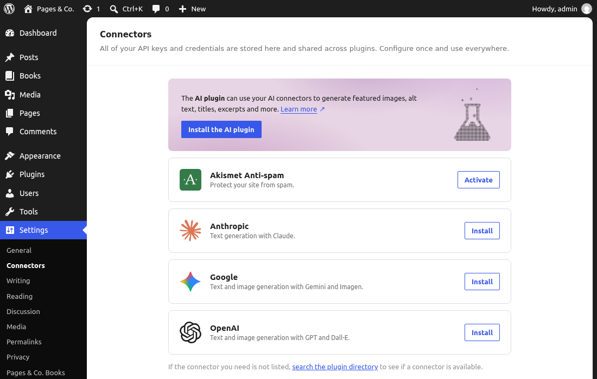
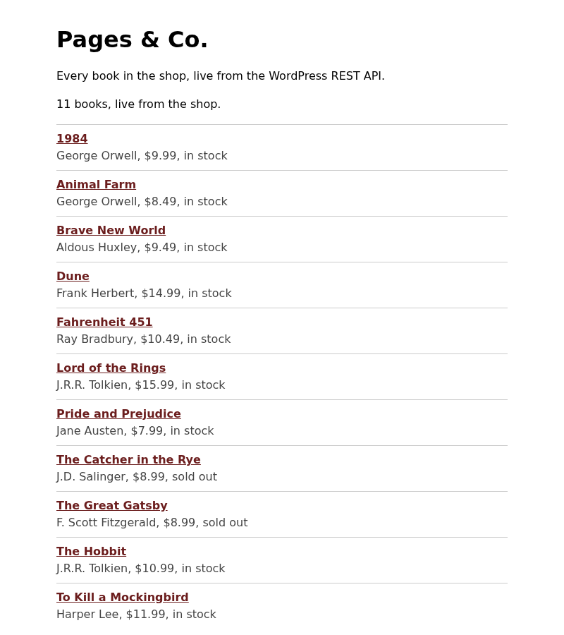

🧭 Lesson 9.2: Next Steps: Headless, AI in Core & Your Career
Pages & Co. is launched, tested and released three times. This last lesson looks past the course, with the same rule as every other lesson: nothing on trust, everything run on the real site. You will put a separate front end on the REST API you built, look at what WordPress 7 really ships for AI (less than the headlines, and more useful than it sounds), and watch WordPress hand your pagesco/check-stock ability to an AI model. Then the human side: how to contribute to WordPress, the kinds of jobs this course prepares you for, a portfolio made from your own project, and a routine for keeping up. You started in Lesson 1.1 with a plan file and two journal questions; you finish by answering them.
🎯 Learning Objectives
By the end of this lesson, you will be able to:
- Explain what "headless" WordPress means, when it is worth its costs, and build a small front end on your own REST routes that pages through results, handles HTML fields correctly and works across origins
- Describe what WordPress 7.0 and 7.1 ship for AI (the AI client,
wp_supports_ai(), the Connectors screen) and what they do not (a model, a provider, an AI feature), and write code that degrades gracefully when no provider is set up - Show how an ability such as
pagesco/check-stockbecomes a tool an AI model can call, and why its permission callback still decides - Find your way into contributing to WordPress: the Make teams, Trac and GitHub, Learn WordPress, meetups and WordCamps
- Choose a career direction, turn the Pages & Co. project into a portfolio piece without leaking secrets, and keep up with WordPress releases
In This Lesson
📍 Where You Are Now
Thirty lessons ago, WordPress was a dashboard in a browser tab. Now it is a PHP application whose load order you know (Lesson 2.2), whose hooks you can find and add (2.3), and which runs a site you built from an empty folder: the pagesco block theme, the pagesco-books plugin with twenty-five features, five custom blocks, its own REST routes under pagesco/v1, a nightly job, an ability, tests, translations and three tagged releases. A quick look at what is running, from the WP-CLI container:
wp core version
wp theme list --status=active --fields=name,version
wp plugin list --status=active,must-use --fields=name,status,version
wp eval 'echo count( rest_get_server()->get_routes( "pagesco/v1" ) ), " routes under pagesco/v1\n";'Output
7.1.3
+---------+---------+
| name | version |
+---------+---------+
| pagesco | 1.2.0 |
+---------+---------+
+---------------+----------+---------+
| name | status | version |
+---------------+----------+---------+
| pagesco-books | active | 1.2.0 |
| mailpit-smtp | must-use | |
| pagesco-site | must-use | 1.2.0 |
+---------------+----------+---------+
6 routes under pagesco/v1Two pieces of that site are the starting points of this lesson. The pagesco/v1 routes (Lessons 7.2 and 9.1) are a public, documented way into the shop's data, which is all a separate front end needs. And the pagesco/check-stock ability (Lesson 7.3) is the shop described for software that reads descriptions, which is what an AI model does. You built both for other reasons; here they open two doors.
🪟 Headless WordPress
Every page of Pages & Co. so far was drawn by WordPress: the theme picked a template, blocks rendered, PHP sent HTML. In a headless (or decoupled) site, WordPress keeps only the back half of that job. Staff still write in the block editor, books still live in wp_posts, plugins still run; but visitors never see a WordPress theme. A separate front end, often a JavaScript application on another host, asks the REST API (or GraphQL) for data and draws the pages itself.
💡 Mental model: the shop's stockroom and its shop windows
A traditional WordPress site is a shop where the stockroom and the shop floor are one building: the theme is the shop floor. Headless keeps the stockroom (WordPress: the stock, the rules, the staff entrance) and sends goods out through a loading door (the API) to shop windows anywhere: a website built with React, a phone app, a screen in the reading corner. The windows can look like anything, but every one of them has to be built and staffed separately, and none of them gets the stockroom's furniture for free.
What it costs, and when it pays
Headless is a trade, not an upgrade. The theme layer you spent Modules 3 and 4 on does a lot of work that a separate front end has to do again:
| WordPress gives you for free | A headless front end must rebuild or give up |
|---|---|
Templates, the Site Editor, patterns, theme.json styles | All layout and styling, in the front end's own code; staff lose "edit the page and see it" |
Blocks that render themselves (render.php, block CSS, the Interactivity API) | A way to draw every block the editors use, or a rule that they only use a few |
| Previews of drafts, logged-in views, the admin bar | Authenticated requests from the front end, and a preview route |
| Plugins that change the front end (SEO tags, forms, the Reserve block) | Each one reimplemented, or its data read from the API and drawn by hand |
| One server to deploy and keep secure (Lesson 8.4) | Two deployments, two hosts, and the API between them |
It pays when the front end must be something WordPress is not good at: an app with its own navigation and state, one content source feeding a website and a phone app and a kiosk, a team of front-end developers who work in React or Vue every day, or a site whose pages are built once and served as static files. For a bookstore that edits its own pages, the block theme plus the Interactivity API (Lesson 6.4) is the better fit, and that is why the course built it that way. A "hybrid" in between is common too: the WordPress theme draws the site, and one interactive part (a catalog search, a dashboard widget like Lesson 7.1's) reads the API.
Your API, from another origin
A front end on another host makes cross-origin requests: the page comes from one origin (say http://localhost:3000) and asks another (http://localhost:8080). Browsers only let the page read the answer if the server says so in CORS headers. Ask the shop's API as a browser on port 3000 would, from the WP-CLI container (only the interesting headers):
curl -s -I -H 'Origin: http://localhost:3000' http://localhost:8080/wp-json/pagesco/v1/books | tr -d '\r' | grep -i '^HTTP\|^access-control\|^x-wp-total'Output
HTTP/1.1 200 OK
Access-Control-Expose-Headers: X-WP-Total, X-WP-TotalPages, Link
Access-Control-Allow-Headers: Authorization, X-WP-Nonce, Content-Disposition, Content-MD5, Content-Type
X-WP-Total: 11
X-WP-TotalPages: 2
Access-Control-Allow-Origin: http://localhost:3000
Access-Control-Allow-Methods: OPTIONS, GET, POST, PUT, PATCH, DELETE
Access-Control-Allow-Credentials: trueWordPress answers CORS for every REST route by itself (rest_send_cors_headers()): it repeats the page's origin in Access-Control-Allow-Origin, so any origin may read public data, and it exposes the paging headers X-WP-Total and X-WP-TotalPages so that a front end on another host can read them. Note Access-Control-Allow-Credentials: true: cookies may travel too, which is why writes need more than a cookie (the nonce of Lesson 7.1, or an application password, never stored in a public front end). Your permission_callbacks, not CORS, are what protect the shop: CORS only decides which pages a browser lets read an answer, while curl and servers never ask.
REST or GraphQL
The REST API is in core, and you know it well: routes, arguments, schemas, permission callbacks. Many headless teams use GraphQL instead, through the third-party plugin WPGraphQL (see also wpgraphql.com): one endpoint, and each query names exactly the fields and nested data a page needs, where REST may need several requests or _embed. It is not part of WordPress, your custom post types and meta need to be registered for it, and the course's code does not depend on it. For a deep, project-based path through headless WordPress with a React front end, the sibling course on Ray's site picks up where this one stops: React + WordPress Mastery.
The project of this lesson builds the smallest honest headless front end: three static files, no framework, no build step, reading /wp-json/pagesco/v1/books. Small enough to read in five minutes, and it meets every problem a big one meets.
🤖 AI in Core, as It Really Is
You may have read that "WordPress 7 has AI built in". What is built in is plumbing: a client library that plugins can use to talk to AI models, a screen where a site owner connects a provider, and a switch to turn it all off. WordPress itself ships no model, no provider and no AI feature. Check it on your site, from the WP-CLI container:
wp eval '
var_dump( wp_supports_ai() );
$prompt = wp_ai_client_prompt( "Write one sentence about Dune by Frank Herbert." );
var_dump( $prompt->is_supported_for_text_generation() );
$text = $prompt->generate_text();
var_dump( is_wp_error( $text ) );
echo $text->get_error_code(), ": ", $text->get_error_message(), "\n";
print_r( $text->get_error_data() );
'Output
bool(true)
bool(false)
bool(true)
prompt_invalid_argument: No models found that support text_generation for this prompt.
Array
(
[status] => 400
[exception_class] => WordPress\AiClient\Common\Exception\InvalidArgumentException
)Read it line by line. wp_supports_ai() is true: nothing has switched AI off. The prompt builder exists, and the text you gave it is fine. But no installed provider offers a model for text generation, so is_supported_for_text_generation() says no, and generate_text() returns a WP_Error rather than throwing: code prompt_invalid_argument, status 400, the library's own exception class in the data. That is the honest state of every fresh WordPress 7.1 site.
What is in core, and what is not
| In WordPress 7.0 and 7.1 | What it is for |
|---|---|
wp_ai_client_prompt( $prompt ) | A fluent builder: with_text(), using_system_instruction(), using_max_tokens(), using_temperature(), as_json_response(), using_abilities(), then generate_text(), generate_image() and others, each returning the result or a WP_Error. Snake_case wrappers around the PHP AI Client library in wp-includes/php-ai-client/ |
is_supported_for_text_generation() and its siblings | Ask before you offer a feature: is there a model for this kind of prompt? |
wp_supports_ai(), the WP_AI_SUPPORT constant, the wp_supports_ai and wp_ai_client_prevent_prompt filters | Switch AI off for a whole site, a request, or one prompt (Exercise 3) |
Settings > Connectors, wp_get_connectors(), the wp_connectors_init action | Where a site owner installs a provider plugin and enters its API key |
The Abilities API (since 6.9) and using_abilities() (7.0) | Let a model call your plugin's abilities as tools (next section) |
And what is not there: core never calls the client itself. Search all of core for a call:
grep -rl 'wp_ai_client_prompt *(' wp-admin wp-includesOutput
wp-includes/ai-client.phpOne file: the one that defines the function. No core screen, block or feature uses AI; plugins do, starting with the WordPress project's own feature plugin AI ("AI features, experiments and capabilities for WordPress"), built by the AI team. That design is deliberate: core provides one shared, provider-neutral way to ask, so that a hundred plugins do not each ship their own API client and ask the site owner for the same key a hundred times.
The Connectors screen
Settings > Connectors (new in 7.0) lists the services a site can connect to. In code, the same list:
wp eval 'foreach ( wp_get_connectors() as $id => $c ) { printf( "%-9s %-17s %-14s %s, %s\n", $id, $c["name"], $c["type"], $c["plugin"]["file"], $c["plugin"]["is_active"]() ? "active" : "not active" ); }'Output
anthropic Anthropic ai_provider ai-provider-for-anthropic/plugin.php, not active
google Google ai_provider ai-provider-for-google/plugin.php, not active
openai OpenAI ai_provider ai-provider-for-openai/plugin.php, not active
akismet Akismet Anti-spam spam_filtering akismet/akismet.php, not activeThree AI providers are listed by default, Anthropic, Google and OpenAI, each pointing at a separate plugin (ai-provider-for-anthropic and so on, published on WordPress.org by the WordPress project), plus Akismet, which is not AI at all: Connectors is for any service that needs a key. None is active. The screen itself is a React page (the server sends only its heading and a "requires JavaScript" notice); in a browser it looks like this:

Note the banner: the screen recommends the separate AI plugin for the actual features (generated alt text, titles, excerpts), and each provider card's Install button installs that provider's plugin. Install one provider from the command line and look again (this needs an internet connection; it is removed right after):
wp plugin install ai-provider-for-anthropic --activate --quiet
wp eval 'printf( "anthropic: %s\n", wp_get_connector( "anthropic" )["plugin"]["is_active"]() ? "active" : "not active" ); var_dump( wp_ai_client_prompt( "Hello" )->is_supported_for_text_generation() );'
wp eval '$auth = wp_get_connector( "anthropic" )["authentication"]; echo $auth["setting_name"], " | ", $auth["constant_name"], " | ", $auth["env_var_name"], "\n";'Output
anthropic: active
bool(false)
connectors_ai_anthropic_api_key | ANTHROPIC_API_KEY | ANTHROPIC_API_KEYThe provider is active, and still no model: a provider plugin knows how to talk to its service, but the list of models comes from the service itself, and that needs an API key. The last line says where WordPress looks for one, in this order: an environment variable ANTHROPIC_API_KEY, a PHP constant of the same name, then the option connectors_ai_anthropic_api_key that the Connectors screen saves. Lesson 8.4's rule for the supplier's key applies unchanged: on a real server, put the key in the environment or wp-config.php, never in Git. With a real key, prompts work, and every one is a paid request to a company outside the site that receives whatever text you send. This course stops here on purpose, so remove the plugin again:
wp plugin deactivate ai-provider-for-anthropic --uninstall --quiet
wp plugin list --fields=name,statusOutput
+---------------+----------+
| name | status |
+---------------+----------+
| akismet | inactive |
| hello | inactive |
| pagesco-books | active |
| mailpit-smtp | must-use |
| pagesco-site | must-use |
+---------------+----------+⚠️ An honest checklist before you add an AI feature for a client
- Who pays, and how much? Every call costs money and takes seconds. Never call a model on a visitor's page view; generate in the admin, on demand, and store the result (Exercise 2).
- What leaves the site? The prompt goes to the provider. Customer names, holds and email addresses (Lesson 9.1's personal data) do not belong in a prompt, and the privacy policy must say what is sent.
- Who checks the output? A model writes plausible text, not true text. Treat it like a draft from a new colleague: a person reviews it before it is published, and the code escapes it like any other input.
- What happens without it? No provider, no key, a timeout, the client's "no AI" policy: the site must work the same, minus the extra.
🧩 Version note: AI on 6.9 sites
The AI client and the Connectors functions are @since 7.0.0; the Abilities API is @since 6.9.0. Pages & Co. Books says Requires at least: 6.9 (Lesson 8.3), so on a 6.9 site wp_ai_client_prompt() does not exist, and calling it is a fatal "Call to undefined function". Plugin code that uses AI checks function_exists( 'wp_ai_client_prompt' ) first, or raises its own Requires at least to 7.0. Exercise 2 does the first.
🧰 Abilities as Tools for a Model
Lesson 7.3 promised that the Abilities API was designed for AI assistants. Here is the connection. Modern models can call tools: you send them, with the prompt, a list of functions (a name, a description, a JSON Schema for the arguments); the model may answer "call this function with these arguments" instead of text; your code runs it and sends the result back; the model writes its answer from that. WordPress 7.0's prompt builder turns abilities into such tools with one method, using_abilities(), and runs the calls for you, as the logged-in user, through the ability's own permission callback.
The tool list for a prompt is explicit: you name the abilities that prompt may use, and a model cannot call any other. With no provider on the course site, the call ends where every prompt ends today:
wp eval '$text = wp_ai_client_prompt( "Is Dune in stock?" )->using_abilities( "pagesco/check-stock" )->generate_text(); echo $text->get_error_code(), "\n";' --user=mariaOutput
prompt_invalid_argumentThe model half needs a provider. The WordPress half does not, and it is the half you are responsible for: what the model is told, and what happens when it asks. Project step 2 plays the model's part by hand and watches WordPress answer it, as Maria and as Devon. The same tools can also be offered to AI applications outside WordPress, such as a desktop assistant or a coding agent, through the Model Context Protocol (MCP), with the WordPress project's MCP Adapter plugin; it is a plugin, not core, and it exposes abilities with the same permission checks.
🛑 A model is just another client
Everything a model sends is input from outside, exactly like a form field or a REST argument. The ability's input_schema validates it, its permission_callback decides for the user the code runs as, and destructive abilities (annotation destructive) deserve a person's confirmation before they run. Never give an AI integration an administrator's application password "to make it work": give it a user with the least role that does the job, as Lesson 7.1 did for Maria's inventory script.
🤝 Contributing to WordPress
Everything you used in this course, core, Gutenberg, WP-CLI, the coding standards, the test library, the translations, Playground, the documentation you read in the Code Reference, was made by contributors, most of them people who started exactly where you are now. Contributing is also one of the best ways to get better: you read code reviewed by experienced developers, and your name ends up in the credits of a release.
| Where | What happens there | A first step for you |
|---|---|---|
| make.wordpress.org | The home of every contributor team: Core, Test, Docs, Polyglots (translation), Accessibility, Performance, Training, Community, Plugins, Themes, CLI, AI and more. Each team has a blog, weekly meetings and a handbook | Read the "which team?" guide, pick one team, attend one meeting and just listen |
| Test team | Testing betas and release candidates, and reproducing bug reports | Run a beta on a copy of your dev site (the WordPress Beta Tester plugin) and report what breaks, with steps to reproduce |
| Polyglots on translate.wordpress.org | Translating core, plugins and themes | If you speak another language: suggest translations for a plugin you use. You know how text domains work (Lesson 8.3) |
Core Trac (core.trac.wordpress.org) and GitHub (wordpress-develop, gutenberg) | Core's PHP is tracked in Trac tickets, with patches as pull requests to wordpress-develop; the block editor lives on GitHub with issues and pull requests | Search for an existing ticket before opening one; test a patch on a ticket marked "needs testing" and write what you saw. The Core handbook explains the workflow |
| Learn WordPress | Free courses, tutorials and online workshops, made by the Training team | Take one workshop on something this course only touched (multisite, WooCommerce, performance) |
| Meetups and WordCamps (events.wordpress.org, WordCamp Central) | Local meetups, and community-organized conferences with Contributor Days | Go to one meetup. At a WordCamp, join the Contributor Day: experienced contributors set you up |
| Five for the Future | Companies pledging staff time to the project | Ask about it in job interviews: it tells you how a company sees open source |
The skill that matters most in every team is one this course practiced in every lesson: show the evidence. A bug report that says "WP-CLI 2.12 on PHP 8.5 prints Deprecated: Using null as an array offset in php-cli-tools/lib/cli/Colors.php on line 95 after every Success line; steps: …; expected: …" gets fixed. "WP-CLI is broken on PHP 8.5" gets a question back. Contributors talk in the project's chat (make.wordpress.org/chat) and in public; be patient, be kind, and expect review comments on your first patch: that is the teaching part.
💼 Career Paths
WordPress work comes in a few shapes. They need the same skills in different proportions, and many developers move between them over the years:
| Path | What the work looks like | What to show |
|---|---|---|
| Agency | Many client sites: new builds with block themes and custom blocks, plus years-old classic themes to maintain, migrations, performance work, accessibility fixes. Deadlines and variety | Both theme kinds (Modules 3 and 4), a clean deploy (8.4), reading other people's code |
| Freelance | Agency work without the agency: you also find clients, write proposals, price, contract and support. Ray's Freelance Launchpad guide covers that business side, from your first rate to contracts and taxes | A portfolio with written-up decisions (Lesson 9.1's write-up), a maintenance offer |
| In-house / product | One large site or product (a publisher, a university, a SaaS company built on WordPress, a host): deep performance, tests, CI, code review, long-lived code | Tests and standards (8.1), caching with numbers (8.2), REST and custom tables (Modules 5 and 7) |
| Plugin or theme business | Your own product: a free version in the WordPress.org directory, often a paid add-on, and lots of support. Backward compatibility and security become your daily work | A plugin that passes Plugin Check (8.3), a readme, a changelog, a support policy |
| Headless / front-end | WordPress as the content back end of a React, Vue or mobile front end | Custom REST routes with schemas (7.2), the React course, a front end like this lesson's |
Whatever the path, employers and clients test the same things, and you have practiced all of them: can you find the right hook, write secure code by default (escape, sanitize, nonces, capabilities, prepared queries), explain a decision, prove a fix, and leave a site better documented than you found it. Being able to say "I built a plugin with a custom table, REST routes with permission callbacks, two blocks and seventeen tests, and deployed it as code only" is a strong start for a junior developer. Saying why it is built that way is what gets you hired.
A portfolio from Pages & Co.
You already have the best portfolio piece a course can give you: a real project with a history. Lesson 9.1's FAQ said what to show (code, screenshots, the write-up, a short recording); project step 4 makes the repository ready to be public. The rules, in short:
- Publish code, not data. Your
wp-contentrepository's.gitignore(Lesson 8.4) already keepsvendor/, builds, uploads and other people's plugins out. Never publish.env,wp-config.php, database dumps or passwords, and check the whole history, not only the last commit. - Lead with decisions. A README that explains why (a custom table for holds, ownership in the SQL, "expired" computed) says more than a feature list.
- Make it runnable. Say how to try it: the Lesson 1.2 setup, which plugins, which commands.
- Make it yours. The course's reference solution is public; your version, your extension (the waitlist of 9.1's Going Further, this lesson's storefront) and your write-up are what make it yours.
📰 Keeping Up with WordPress
WordPress ships a major release a few times a year and minor (security and maintenance) releases in between. This course was written for 7.1.3; by the time you build your next site there will be newer versions, and some of what you learned will have changed a little. That is normal, and you now know how to check instead of guess. Where the information is:
- WordPress News: release announcements, including security releases. Subscribe to it.
- Make WordPress Core: the developer notes ("dev notes") and the Field Guide for each major release: what changed for code like yours. Read the Field Guide for every major release.
- WordPress Developer Blog: tutorials and monthly roundups of what is new for developers.
- The roadmap and the releases archive: what is planned, and every version that shipped.
- Your own site: the
Tested up tolines of your theme and plugin (Lesson 8.3) are promises. Before you raise them, run your tests and the smoke test on the new version in wp-env or a copy of the site (Lesson 8.4's staging routine).
A good habit when something you learned here behaves differently on a newer WordPress: do what the course did. Read the function in the Code Reference or in core, run a small test, and look for the dev note that explains the change. Project step 3 turns that into a routine.
⚠️ Common Mistakes
Three mistakes from the new ground of this lesson: two in a headless front end, one in AI code. Each one changes nothing that lasts.
1. Escaping a field that is already HTML
A front end shows the site's name. The REST index has it:
http://localhost:8080/wp-json/?_fields=name,descriptionOutput
{
"name": "Pages & Co.",
"description": ""
}The name arrives as Pages & Co., because WordPress stores blogname escaped (Lesson 1.2) and returns it that way. A first version of the storefront writes it with document.title = site.name, or with textContent, the safe way to put text on a page. Recorded in Chromium, the browser tab and the heading then read:
tab title: Pages & Co. storefront
heading: Pages & Co.What it means: textContent does not interpret HTML, which is why it is safe, so the entity & is shown as five characters. The opposite fix, innerHTML, would show the ampersand, and would also run any HTML that ever reaches that field. Fix: know which fields are HTML. In core's routes, title.rendered, content.rendered, excerpt.rendered and the site name are HTML; the shop's own pagesco/v1 routes return plain text (Lesson 7.2's prepare_book() sends the raw title), which is one more reason to design your own routes for a front end. Turn HTML into text once, with the browser's parser, and then use textContent everywhere: the storefront's htmlToText() does exactly that.
2. Treating generate_text()'s answer as text
A tempting first AI feature: a blurb under every book, generated on the fly. As a must-use plugin, wordpress/wp-content/mu-plugins/pagesco-ai-blurb.php:
<?php
/**
* Plugin Name: Pages & Co. AI Blurb (Lesson 9.2, Common Mistake 2)
*/
add_filter(
'the_content',
function ( $content ) {
if ( ! is_singular( 'book' ) ) {
return $content;
}
$blurb = wp_ai_client_prompt( 'Write a one-sentence blurb for the novel ' . get_the_title() . '.' )->generate_text();
return $content . '<p class="pagesco-ai-blurb">' . esc_html( $blurb ) . '</p>';
}
);http://localhost:8080/books/dune/ (the visible text)Error
Fatal error: Uncaught Error: Object of class WP_Error could not be converted to string in /var/www/html/wp-includes/formatting.php:1128
Stack trace:
#0 /var/www/html/wp-includes/formatting.php(4752): wp_check_invalid_utf8(Object(WP_Error))
#1 /var/www/html/wp-content/mu-plugins/pagesco-ai-blurb.php(15): esc_html(Object(WP_Error))
#2 /var/www/html/wp-includes/class-wp-hook.php(353): {closure:/var/www/html/wp-content/mu-plugins/pagesco-ai-blurb.php:8}('')
...
#4 /var/www/html/wp-includes/blocks/post-content.php(50): apply_filters('the_content', '')
...
thrown in /var/www/html/wp-includes/formatting.php on line 1128What it means: read the trace from the top: generate_text() returned a WP_Error (no provider, as on every fresh site), the filter passed that object to esc_html() on line 15 (frame #1), and the first thing esc_html() does is treat its argument as a string. PHP cannot turn a WP_Error into one, so the whole book page is replaced by the fatal error; frame #4 shows it was the Post Content block running the_content. On a production site visitors would see "There has been a critical error on this website" (Lesson 8.1). Fix: every result of the AI client is "text or WP_Error", like wp_remote_get() in Lesson 7.3: check is_wp_error() and fall back to something useful. And the bigger mistake is the design: even with a working provider, this code sends a paid request, and waits for it, on every view of every book page, and shows unreviewed text to customers. Generate once, in the admin, store the reviewed result as content (a meta field, the excerpt), and show the stored text. Exercise 2 writes the safe version of the helper. Remove the file:
rm wp-content/mu-plugins/pagesco-ai-blurb.php
curl -s -o /dev/null -w '%{http_code}\n' http://localhost:8080/books/dune/Output
2003. Reading only the first page (silent)
The storefront's first draft fetches /wp-json/pagesco/v1/books once and draws what comes back. It shows six books, with no error anywhere. The answer's headers say what is missing:
http://localhost:8080/wp-json/pagesco/v1/books (the headers, and each book's title)Output
HTTP/1.1 200 OK
X-WP-Total: 11
X-WP-TotalPages: 2
[
{
"title": "1984"
},
{
"title": "Animal Farm"
},
{
"title": "Brave New World"
},
{
"title": "Dune"
},
{
"title": "Fahrenheit 451"
},
{
"title": "Lord of the Rings"
}
]What it means: eleven books, two pages, six per page: Lesson 7.2 made the route's default page size the shop's "Books per list" setting, as core's routes default to ten. A front end that ignores X-WP-TotalPages silently drops books, and the day the shop changes the setting, the storefront changes with it. Fix: read the paging headers and loop until the last page, as the storefront's allBooks() does, or ask for per_page=100 (the route's maximum) and still check the total. The headers are readable from another origin only because WordPress lists them in Access-Control-Expose-Headers, which you saw above.
🛠️ Project: Pages & Co., What Comes Next
Four short steps, one for each door this lesson opened, and a fifth that is all yours. Work in your development project as always; commands run in the WP-CLI container unless a step says otherwise. Allow about 45 minutes; step 5 is a first sketch that the journal prompt finishes.
🛠️ Step 1: A headless storefront (15 min)
Three static files that list every book from the shop's API, with no WordPress theme involved. For this lesson they live in a folder wordpress/storefront/, so that Apache serves them at http://localhost:8080/storefront/ and you need no second server; a real front end has its own repository and its own host (step 5 suggests moving it). Like supplier-sandbox/ (Lesson 7.3), it is outside wp-content, so your Git repository and your deploys never see it.
wordpress/storefront/index.html: the page, with a status line that screen readers announce and a fallback for visitors without JavaScript:
<!DOCTYPE html>
<html lang="en">
<head>
<meta charset="utf-8">
<meta name="viewport" content="width=device-width, initial-scale=1">
<title>Storefront</title>
<link rel="stylesheet" href="storefront.css">
<script type="module" src="storefront.js"></script>
</head>
<body>
<header>
<h1>Bookstore</h1>
<p>Every book in the shop, live from the WordPress REST API.</p>
</header>
<main>
<p id="status" role="status">Loading the catalog...</p>
<ul id="books"></ul>
<noscript><p>This list needs JavaScript. <a href="http://localhost:8080/books/">See all books on the shop's website</a>.</p></noscript>
</main>
</body>
</html>wordpress/storefront/storefront.js: everything the three Common Mistakes taught, in about sixty lines. The API's address is a full URL, so the same files work from any origin:
// Pages & Co. storefront: a tiny headless front end for the shop's REST API (Lesson 9.2).
const API = 'http://localhost:8080/wp-json/';
const list = document.querySelector( '#books' );
const status = document.querySelector( '#status' );
const price = new Intl.NumberFormat( 'en-US', { style: 'currency', currency: 'USD' } );
// Some fields arrive as HTML (the site name is stored escaped: "Pages & Co.").
// Turn HTML into plain text once, then put text on the page with textContent only.
function htmlToText( html ) {
return new DOMParser().parseFromString( html, 'text/html' ).body.textContent;
}
async function get( path ) {
const response = await fetch( API + path );
if ( ! response.ok ) {
throw new Error( `${ path } answered ${ response.status }` );
}
return response;
}
// Every page of /pagesco/v1/books: the route sends the shop's "Books per list" per page (Lesson 7.2).
async function allBooks() {
const books = [];
let page = 1;
let pages = 1;
do {
const response = await get( `pagesco/v1/books?page=${ page }` );
pages = Number( response.headers.get( 'X-WP-TotalPages' ) );
books.push( ...( await response.json() ) );
page++;
} while ( page <= pages );
return books;
}
function bookItem( book ) {
const item = document.createElement( 'li' );
const link = document.createElement( 'a' );
link.href = book.link;
link.textContent = book.title;
const details = document.createElement( 'p' );
details.textContent = `${ book.author }, ${ price.format( book.price ) }, ${ book.in_stock ? 'in stock' : 'sold out' }`;
item.append( link, details );
return item;
}
try {
const site = await ( await get( '?_fields=name' ) ).json();
const name = htmlToText( site.name );
document.title = `${ name } storefront`;
document.querySelector( 'h1' ).textContent = name;
const books = await allBooks();
list.replaceChildren( ...books.map( bookItem ) );
status.textContent = `${ books.length } books, live from the shop.`;
} catch ( error ) {
status.textContent = `The shop could not be reached (${ error.message }).`;
}wordpress/storefront/storefront.css: just enough style to read it:
body { font-family: system-ui, sans-serif; max-width: 40rem; margin: 2rem auto; padding: 0 1rem; line-height: 1.5; }
h1 { margin-bottom: 0; }
ul { list-style: none; padding: 0; }
li { border-top: 1px solid #ccc; padding: 0.5rem 0; }
li p { margin: 0; color: #444; }
a { color: #6b1d1d; font-weight: 600; }Check what the server sends (no books yet: the browser fetches them):
http://localhost:8080/storefront/ (View Source, the main element)Output
<main>
<p id="status" role="status">Loading the catalog...</p>
<ul id="books"></ul>
<noscript><p>This list needs JavaScript. <a href="http://localhost:8080/books/">See all books on the shop's website</a>.</p></noscript>
</main>Now open it in a browser. Better still, serve the folder from a second origin and watch CORS work: on your computer, with Node 24 (Lesson 6.1), npx serve -l 3000 wordpress/storefront in your project folder (answer y when npx asks to install serve, a small static file server), then open http://localhost:3000/. This is what Chromium recorded on a copy of the course site, with the page served from port 3000 and the API on port 8080:
--- http://localhost:3000/ (the API is on http://localhost:8080)
tab title: Pages & Co. storefront
heading: Pages & Co.
status: 11 books, live from the shop.
books listed: 11
first: 1984 | George Orwell, $9.99, in stock
last: To Kill a Mockingbird | Harper Lee, $11.99, in stock
request: GET /wp-json/?_fields=name -> 200 | Origin: http://localhost:3000 | allow-origin: http://localhost:3000
request: GET /wp-json/pagesco/v1/books?page=1 -> 200 | Origin: http://localhost:3000 | allow-origin: http://localhost:3000
request: GET /wp-json/pagesco/v1/books?page=2 -> 200 | Origin: http://localhost:3000 | allow-origin: http://localhost:3000
console warnings and errors: (none)Three cross-origin requests, each answered with the page's own origin in Access-Control-Allow-Origin: the site name, then page 1 and page 2 of the books, because the second page was announced by X-WP-TotalPages. Eleven books, the name with a real ampersand, and nothing in the console:

Change a price in the editor (Dune to 13.99, say), reload the storefront, and put it back: the front end has no copy of the data, it reads the shop every time. In pagesco-plan.txt, under "APIs", add: "Storefront (Lesson 9.2): static HTML + JS on pagesco/v1/books, all pages via X-WP-TotalPages, site name decoded once, textContent only; CORS from any origin for GET."
🛠️ Step 2: Ask the shop the way a model would (10 min)
Play the model's part of the diagram in Abilities as Tools for a Model by hand. This script prints what a model would be told about pagesco/check-stock, then sends the function call a model would send, through the same resolver class that generate_text() uses, and prints WordPress's answer. Create wordpress/model-check.php (in the WordPress root, a throwaway like Lesson 9.1's holds-check.php):
<?php
/**
* Lesson 9.2, project step 2: what WordPress does when an AI model asks to use an ability.
* Run with: wp eval-file model-check.php --user=<login>
*/
use WordPress\AiClient\Tools\DTO\FunctionCall;
$pagesco_ability = wp_get_ability( 'pagesco/check-stock' );
$pagesco_function = WP_AI_Client_Ability_Function_Resolver::ability_name_to_function_name( $pagesco_ability->get_name() );
// 1. What the model is told: a function name, a description, the input schema.
echo 'Tool: ', $pagesco_function, "\n";
echo 'Description: ', $pagesco_ability->get_description(), "\n";
echo 'Input schema: ', wp_json_encode( wp_prepare_json_schema_for_client( $pagesco_ability->get_input_schema() ) ), "\n";
// 2. The model's answer: "call this function with these arguments". Written by hand here.
$pagesco_call = new FunctionCall( 'call_1', $pagesco_function, array( 'slug' => 'the-great-gatsby' ) );
// 3. WordPress runs the ability as the current user, only if this prompt allowed it.
$pagesco_resolver = new WP_AI_Client_Ability_Function_Resolver( 'pagesco/check-stock' );
$pagesco_response = $pagesco_resolver->execute_ability( $pagesco_call );
echo 'Answer for ', wp_get_current_user()->user_login, ': ', wp_json_encode( $pagesco_response->getResponse() ), "\n";wp eval-file model-check.php --user=mariaOutput
Tool: wpab__pagesco__check-stock
Description: Says whether the shop has a book in stock, how many copies the supplier has, and when the supplier's next delivery is.
Input schema: {"type":"object","properties":{"slug":{"type":"string","description":"The book's slug, such as the-great-gatsby.","minLength":1}},"required":["slug"],"additionalProperties":false}
Answer for maria: {"title":"The Great Gatsby","in_stock":false,"supplier_available":0,"next_delivery":"2027-11-15"}Three things the model would see. The tool name is the ability's name made safe for function-calling APIs: the prefix wpab__, and the slash written as a double underscore. The description is the one you wrote in Lesson 7.3 for a reader who has never seen the shop; for a model it is the only explanation it gets, so a vague description means a tool that is called at the wrong time or never. The input schema tells it which arguments are allowed. Then the call: WordPress turned the function name back into pagesco/check-stock, checked that this prompt allowed it, and ran it as Maria, with the same answer the REST API gave her in Lesson 7.3. Now the same call as Devon, an author:
wp eval-file model-check.php --user=devon | tail -n 1Output
Answer for devon: {"error":"Ability \"pagesco\/check-stock\" does not have necessary permission.","code":"ability_invalid_permissions","data":null}No data for Devon: the resolver ran the ability as the current user, and its permission callback (edit_others_posts) said no. The model gets an error it can explain to the user ("you are not allowed to check stock"), never the numbers. A model can only ever do what the logged-in person may do, and only with the abilities the plugin listed for that prompt: that is the security model, and it is the permission callback you wrote. Remove the script, and write in pagesco-plan.txt under "APIs": "AI: no provider (7.1 ships none). pagesco/check-stock is a model tool via using_abilities(); permission edit_others_posts still decides; description written for a reader who never saw the shop."
rm model-check.php🛠️ Step 3: A release-watch routine (5 min)
Five commands that tell you where your site stands against what WordPress.org has released: the versions you run, and whether there are updates for core, plugins or themes. Run them before every maintenance session (Lesson 8.4's checklist) and whenever a release is announced:
wp core version --extra
wp core check-update
wp plugin list --update=available --fields=name,version,update_version
wp theme list --update=available --fields=name,version,update_version
wp language core list --status=installed --fields=language,updateOutput (your list may differ: it depends on what has been released when you run it)
WordPress version: 7.1.3
Database revision: 61833
TinyMCE version: 4.9110 (49110-20250317)
Package language: en_US
Success: WordPress is at the latest version.
+------+---------+----------------+
| name | version | update_version |
+------+---------+----------------+
+------+---------+----------------+
+------+---------+----------------+
| name | version | update_version |
+------+---------+----------------+
+------+---------+----------------+
+----------+--------+
| language | update |
+----------+--------+
| es_ES | none |
+----------+--------+On the course site the answers are short. On yours, a line in the update lists is your cue for the routine of Lesson 8.4: read the release notes (and, for a major WordPress release, the Field Guide on Make WordPress Core), update a copy of the site first, run composer lint, the PHPUnit suite in wp-env and holds-smoke.sh, then update production after a backup. Your own theme and plugin show Update URI: false (Lesson 8.4), so WordPress.org never offers an "update" for them that is really somebody else's plugin.
🛠️ Step 4: Make the repository portfolio-ready (10 min)
Before a repository goes public, prove that no secret was ever committed: a later commit that deletes a password does not remove it from the history. Search every commit for the supplier's sandbox key, the course's dev passwords and the shape of an AI key (in wordpress/wp-content, with Git as in Lesson 8.4):
for secret in sandbox-7f3a9c maria-pass devon-pass jordan-pass 'sk-ant-'; do
printf '%-15s %s commit(s)\n' "$secret" "$(git log --all -S "$secret" --oneline | wc -l)"
done
git ls-files | grep -E '(^|/)(\.env|wp-config\.php)$|\.sql$' | wc -lOutput
sandbox-7f3a9c 0 commit(s)
maria-pass 0 commit(s)
devon-pass 0 commit(s)
jordan-pass 0 commit(s)
sk-ant- 0 commit(s)
0Zero everywhere. git log -S (the "pickaxe") lists every commit that added or removed a string, in any file, on any branch: the right question, because a secret that was committed once and deleted later is still in the history, and anyone who clones the repository can read it. No tracked file is a .env, a wp-config.php or an SQL dump. Lesson 8.4's ignore-everything-then-let-in .gitignore is why: secrets never had a way in. If a check ever finds one, the history must be rewritten (and the secret changed, because it has been exposed); prevention is far cheaper. Before you publish, add any other string you know to be secret, such as an application password you created.
A public repository needs a front page. wordpress/wp-content/README.md, written for a stranger (replace the brackets with your own words, and keep it short):
# Pages & Co.: a WordPress 7.1 bookstore
The website of a fictional independent bookstore, built as the project of the course
"PHP and WordPress Development" (https://rays-php-wordpress.netlify.app/). All code is mine,
written lesson by lesson; the store, its staff and its customers are fictional.
## What is here
- themes/pagesco: a block theme (theme.json, templates, patterns, a style variation, bindings to live prices)
- plugins/pagesco-books: Books, Genres, book details, settings, events and holds in custom tables,
five blocks (book card, book list, book filter, reserve, my holds), REST routes under pagesco/v1,
a daily WP-Cron job, an ability (pagesco/check-stock), translations, PHPCS and PHPUnit tests
- mu-plugins/pagesco-site.php: the store notice and its hooks
## Decisions I would defend
- Holds live in a custom table, not a post type, because [your reason]
- Another customer's hold answers "not found", not "forbidden", because [your reason]
- [one more decision of your own]
## Try it
WordPress 7.1 on PHP 8.5 with Docker (setup: Lesson 1.2 of the course). In the plugin folder:
composer install, npm ci, npm run build. Activate the theme and the plugin.
## Proof
composer lint: clean. PHPUnit (wp-env): 17 tests. Releases: git tag -n (release-1 to release-3).Ask Git whether it will see the file:
git check-ignore -v README.md; git status --shortOutput
.gitignore:3:/* README.mdGit names the rule that hides it: line 3 of .gitignore, /*, "ignore everything at the top level", and git status shows nothing new. The file is in exactly the situation Lesson 8.4 designed for: only what is let back in with ! is tracked. Let it in with one line at the end of .gitignore:
# The repository's front page (Lesson 9.2).
!/README.mdgit add .gitignore README.md
git commit -q -m "README for the portfolio"
git status --short | wc -l
git log --format=%s -n 2
git ls-files | wc -lOutput
0
README for the portfolio
Pages & Co. Books 1.2.0 and theme 1.2.0: Reserve & Pick Up
110A clean working copy, the README on top of release-3, and 110 tracked files. The commit has no tag: it changes no code, so it is not a release (Lesson 8.4: a tag is what you deploy). Pushing to a public remote is your choice (GitHub, GitLab, Codeberg; Lesson 8.4's private remote can stay private and a public one can be added). Add screenshots and your RESERVE-AND-PICKUP.md from Lesson 9.1, and pin the repository on your profile.
🛠️ Step 5: Plan your own next project (5 min)
In Lesson 1.1 you answered "what do you hope to build by the end of this course, besides Pages & Co.?". Open that journal entry. Now plan it the way you planned Pages & Co., in a new file next to pagesco-plan.txt, say next-plan.txt: a site map, a feature list with each feature marked content, theme or plugin and why, and, new this time, the lesson you would reread for each piece:
[Project name] plan
Who it is for: ...
Site map
/ ...
/[things]/ a custom post type? (5.2)
Features where why reread
[a list of things, filterable] plugin must survive a redesign 5.2, 6.3, 6.4
[the look] theme design only 3.2, 3.3
[an integration] plugin external API + cache 7.3
Hosting and deploy: ... (8.4)
First release: [the smallest version that is useful]If your old answer no longer fits, because you now see the project differently, that is the point: write down what changed and why. If you want a separate front end for it, move this lesson's storefront out of wordpress/ into its own folder and Git repository, and start there.
✅ Project Completion Checklist
- The storefront lists all eleven books with prices and stock from
pagesco/v1/books, shows "Pages & Co." correctly, and works from a second origin - You watched WordPress answer a model's function call for
pagesco/check-stock: data for Maria, a refusal for Devon - You ran the release-watch commands and know what you would do with an update line
- Your
wp-contenthistory contains no secrets, andREADME.mdis committed next-plan.txtplans your own project, with the lessons to reread
🏋️ Hands-on Exercises
Each exercise undoes itself (temporary must-use plugins are deleted at the end), so your site stays as the project left it. Try each one before you open the solution.
🏋️ Exercise 1: Genre Shelves in the Storefront
The shop wants links like http://localhost:8080/storefront/?genre=fantasy that show one genre. The route already takes genre (Lesson 7.2). Change storefront.js so that it passes the address's genre parameter on to the API, safely, and shows "Fantasy: 2 books" in the status line. First check, with curl, what the route answers for a genre and for a genre that does not exist.
💡 Hint
new URLSearchParams( location.search ).get( 'genre' ) reads the parameter; encodeURIComponent() puts it into the API address safely. The route answers 400 for an unknown slug, and get() already turns that into an error message. For the genre's name, ask /wp/v2/genres?slug=…&_fields=name, and remember Common Mistake 1: is a term name HTML?
✅ Solution
What the route answers (first a real genre, then a typo):
curl -s -i 'http://localhost:8080/wp-json/pagesco/v1/books?genre=fantasy'Output
HTTP/1.1 200 OK
X-WP-Total: 2
[
{
"title": "Lord of the Rings",
"genres": [
"fantasy",
"fiction"
]
},
{
"title": "The Hobbit",
"genres": [
"fantasy",
"fiction"
]
}
]curl -s -i 'http://localhost:8080/wp-json/pagesco/v1/books?genre=fantasyy'Output
HTTP/1.1 400 Bad Request
{"code":"rest_invalid_param","message":"Invalid parameter(s): genre","data":{"status":400,"params":{"genre":"genre must be the slug of an existing genre."},"details":{"genre":{"code":"pagesco_unknown_genre","message":"genre must be the slug of an existing genre.","data":null}}}}http://localhost:8080/wp-json/wp/v2/genres?slug=fantasy&_fields=nameOutput
[
{
"name": "Fantasy"
}
]Term names are stored escaped like the site name (an "&" in a genre would arrive as &), so they go through htmlToText() too. In storefront.js, replace allBooks() and the try block's last three lines:
const genre = new URLSearchParams( location.search ).get( 'genre' ) ?? '';
const filter = genre ? `&genre=${ encodeURIComponent( genre ) }` : '';
async function allBooks() {
const books = [];
let page = 1;
let pages = 1;
do {
const response = await get( `pagesco/v1/books?page=${ page }${ filter }` );
pages = Number( response.headers.get( 'X-WP-TotalPages' ) );
books.push( ...( await response.json() ) );
page++;
} while ( page <= pages );
return books;
}
// ... in the try block:
const books = await allBooks();
list.replaceChildren( ...books.map( bookItem ) );
let shelf = 'All books';
if ( genre ) {
const terms = await ( await get( `wp/v2/genres?slug=${ encodeURIComponent( genre ) }&_fields=name` ) ).json();
shelf = terms.length ? htmlToText( terms[ 0 ].name ) : genre;
}
status.textContent = `${ shelf }: ${ books.length } books.`;With ?genre=fantasy the status reads "Fantasy: 2 books." and the list shows The Hobbit and Lord of the Rings; with the typo it reads "The shop could not be reached (pagesco/v1/books?page=1&genre=fantasyy answered 400).", honest if not pretty: a nicer message would read the error's JSON message. The parameter can never inject HTML or change the API path: it is URL-encoded on the way out, and nothing from the address is ever written to the page except through textContent.
🏋️ Exercise 2: An AI Helper That Never Breaks the Page
Write pagesco_books_blurb( WP_Post $book ): string in a temporary must-use plugin exercise-blurb.php. It returns a model's one-sentence blurb when a model is available, and otherwise a plain fallback built from the book's meta ("Dune by Frank Herbert, 412 pages."). It must not fail on WordPress 6.9, must not ask a model when none is available, and must log (not show) any error. Call it for Dune and read the log.
💡 Hint
Three guards in order: function_exists( 'wp_ai_client_prompt' ) (the version note), is_supported_for_text_generation() on the builder, then is_wp_error() on the result. using_system_instruction() and using_max_tokens() keep the answer short and on topic. In real use you would call this from an admin action and store the result, never on a page view.
✅ Solution
<?php
/**
* Plugin Name: Exercise: AI Blurb With a Fallback
* Description: Lesson 9.2, Exercise 2: a model's blurb when one is available, the book's facts otherwise.
*/
/**
* A one-sentence blurb for a book. Call it from an admin action and store the result; never on a page view.
*
* @param WP_Post $book A book.
*/
function pagesco_books_blurb( WP_Post $book ): string {
$author = (string) get_post_meta( $book->ID, 'pagesco_author', true );
$fallback = sprintf( '%s by %s, %d pages.', $book->post_title, $author, (int) get_post_meta( $book->ID, 'pagesco_pages', true ) );
// WordPress 6.9 has no AI client.
if ( ! function_exists( 'wp_ai_client_prompt' ) ) {
return $fallback;
}
$prompt = wp_ai_client_prompt( sprintf( 'Write a one-sentence blurb for the novel "%s" by %s.', $book->post_title, $author ) )
->using_system_instruction( 'You write short, friendly blurbs for an independent bookstore. No spoilers. Plain text only.' )
->using_max_tokens( 80 );
// No provider, no key, or AI switched off: do not even try.
if ( ! $prompt->is_supported_for_text_generation() ) {
error_log( 'pagesco_books_blurb: no text model available, used the fallback for ' . $book->post_name );
return $fallback;
}
$text = $prompt->generate_text();
if ( is_wp_error( $text ) ) {
error_log( 'pagesco_books_blurb: ' . $text->get_error_code() . ' for ' . $book->post_name );
return $fallback;
}
return sanitize_text_field( $text );
}wp eval 'echo pagesco_books_blurb( get_page_by_path( "dune", OBJECT, "book" ) ), "\n";'Output (the new lines of debug.log)
[26-Oct-2026 08:16:44 UTC] pagesco_books_blurb: no text model available, used the fallback for duneThe page would get the fallback, the log says why, and nothing a visitor sees depends on a third party. With a provider and a key, the same function returns the model's sentence, passed through sanitize_text_field() because model output is input. Remove the file:
rm wp-content/mu-plugins/exercise-blurb.php🏋️ Exercise 3: A Client Who Says "No AI"
A client's policy forbids AI services on their site, including any a plugin might add later. Find the one-line setting that switches all of WordPress's AI plumbing off, turn it on, and show three effects: wp_supports_ai(), the connectors that remain, and what a prompt now returns. Then remove it again.
💡 Hint
Read wp_supports_ai() in wp-includes/ai-client.php: a constant comes first, then a filter. wp config set NAME false --raw writes a constant (Lesson 7.3).
✅ Solution
wp config set WP_AI_SUPPORT false --raw
wp eval 'var_dump( wp_supports_ai() ); echo implode( ", ", array_keys( wp_get_connectors() ) ), "\n"; $r = wp_ai_client_prompt( "Hello" )->generate_text(); echo $r->get_error_code(), " (", $r->get_error_data()["status"], "): ", $r->get_error_message(), "\n";'
wp config delete WP_AI_SUPPORTOutput
Success: Added the constant 'WP_AI_SUPPORT' to the 'wp-config.php' file with the raw value 'false'.
bool(false)
akismet
prompt_prevented (503): AI features are not supported in this environment.
Success: Deleted the constant 'WP_AI_SUPPORT' from the 'wp-config.php' file.With WP_AI_SUPPORT set to false, wp_supports_ai() says no, the connector registry does not even register the three AI providers (only Akismet is left on the Connectors screen), and every prompt answers prompt_prevented with status 503 before any provider is asked, whatever plugins are installed. Code like Exercise 2's keeps working: is_supported_for_text_generation() is false, so it uses its fallback. The wp_supports_ai filter does the same per request (return false from it), and wp_ai_client_prevent_prompt can stop single prompts, for example every prompt that a plugin sends while a user is not logged in. Put the constant in the client's wp-config.php next to DISALLOW_FILE_EDIT (Lesson 8.4), and write it in their maintenance notes.
🏋️ Exercise 4: A Second Tool for the Shop's Assistant (Stretch)
A bookseller's assistant would also be asked "what's on this week?". Register an ability pagesco/upcoming-events in a temporary must-use plugin exercise-events-ability.php: read-only, in the pagesco category, an optional limit (1 to 10, default 3), output a list of events (title, starts_at, location) from EventsTable::find() (Lesson 5.5). Who may run it? Events are public on the Events page, so any logged-in user is enough. Run it over REST as Jordan, a Subscriber, and once with limit 50.
💡 Hint
Copy the shape of src/Abilities.php from Lesson 7.3: wp_abilities_api_init, input_schema with a top-level 'default' => array() (a gotcha of the Abilities API: property defaults do not apply when no input is sent, so give the whole input a default), meta with annotations.readonly and show_in_rest. The permission is current_user_can( 'read' ). EventsTable::find( $limit, '' ) returns rows.
✅ Solution
<?php
/**
* Plugin Name: Exercise: Upcoming Events Ability
* Description: Lesson 9.2, Exercise 4: pagesco/upcoming-events, a read-only tool for the shop's assistant.
*/
use PagesCo\Books\EventsTable;
add_action(
'wp_abilities_api_init',
function () {
wp_register_ability(
'pagesco/upcoming-events',
array(
'label' => 'List upcoming events',
'description' => 'Lists the next events at the Pages & Co. bookstore (author readings, book clubs, story time), soonest first, with their start time and location.',
'category' => 'pagesco',
'input_schema' => array(
'type' => 'object',
'properties' => array(
'limit' => array(
'type' => 'integer',
'minimum' => 1,
'maximum' => 10,
'description' => 'How many events to list.',
),
),
'additionalProperties' => false,
'default' => array(),
),
'output_schema' => array(
'type' => 'array',
'items' => array(
'type' => 'object',
'properties' => array(
'title' => array( 'type' => 'string' ),
'starts_at' => array( 'type' => 'string' ),
'location' => array( 'type' => 'string' ),
),
),
),
'permission_callback' => function () {
return current_user_can( 'read' );
},
'execute_callback' => function ( $input ) {
$events = EventsTable::find( (int) ( $input['limit'] ?? 3 ), '' );
return array_map(
fn( $event ) => array(
'title' => $event->title,
'starts_at' => $event->starts_at,
'location' => $event->location,
),
$events
);
},
'meta' => array(
'annotations' => array(
'readonly' => true,
'idempotent' => true,
),
'show_in_rest' => true,
),
)
);
}
);curl -s --user "jordan:$JORDAN" 'http://localhost:8080/wp-json/wp-abilities/v1/abilities/pagesco/upcoming-events/run?input%5Blimit%5D=2'Output
[
{
"title": "Book club: Dune",
"starts_at": "2027-11-04 19:00:00",
"location": "Reading corner"
},
{
"title": "Story time: The Hobbit",
"starts_at": "2027-11-06 10:30:00",
"location": "Children's corner"
}
]curl -s --user "jordan:$JORDAN" 'http://localhost:8080/wp-json/wp-abilities/v1/abilities/pagesco/upcoming-events/run?input%5Blimit%5D=50'Output
{
"code": "ability_invalid_input",
"message": "Ability \"pagesco/upcoming-events\" has invalid input. Reason: input[limit] must be between 1 (inclusive) and 10 (inclusive)",
"data": {
"status": 400
}
}Jordan, a Subscriber, gets the next two events of the shop's calendar (Lesson 5.5), soonest first, because read is all the ability asks. With limit 50 the input schema refuses before the callback runs: ability_invalid_input with status 400 and the reason from the schema, exactly as Lesson 7.2's REST arguments behaved. That reason is also what a model would get back, so it can retry with a valid limit. Remove the file:
rm wp-content/mu-plugins/exercise-events-ability.php🎯 Quick Quiz
🎯 Check Your Understanding
Question 1: A headless front end fetches /wp-json/pagesco/v1/books once and shows six books. The shop has eleven. What is the fix?
Question 2: On a fresh WordPress 7.1 site, what does wp_ai_client_prompt( 'Hello' )->generate_text() return?
Question 3: A client gives you an Anthropic API key for an AI feature on their live site. Where should it go?
Question 4: A prompt sent as Devon (an author) includes using_abilities( 'pagesco/check-stock' ), and the model asks to call it. What happens?
Question 5: You found that a core function behaves differently from its documentation. What is the most useful first contribution?
❓ Common Questions at This Stage
Should my next client site be headless?
Probably not, unless the brief needs what headless is good at: several front ends for one content source, an app-like front end, or a team that works in a JavaScript framework every day. Ask who edits the site and how: if the answer is "the client, in the block editor, and they want to see what they get", a block theme does that out of the box. If you do go headless, budget for previews, SEO tags, forms and two deployments from the start, and keep the REST routes yours (custom routes with schemas, as in Lesson 7.2) so the front end does not depend on core's output.
Will AI replace WordPress developers?
AI tools already write a lot of code, including WordPress code, and they will keep getting better. What you practiced in this course is what they do not do for you: decide where a rule belongs, see that a check asks about "posts" instead of "this post", notice that a ZIP is missing a folder, prove a fix with a test, and take responsibility for a client's data. Use AI tools as you would a fast junior colleague: give them clear tasks, read everything they write, and run it. The developers who do well are the ones who can check the work.
Do I need React or a framework next?
For block development you already know the React that WordPress uses (Module 6). For headless work, agency front-end roles or app-like interfaces, yes: learn a framework properly. The sibling course React + WordPress Mastery is built on the same idea as this lesson's storefront, much further. Other good next topics, depending on your path: WooCommerce (stores), multisite (networks of sites), WP-CLI commands of your own (automation), and the performance and accessibility work that every path needs.
How do I find my first paid WordPress work?
Start close to home: people and organizations you know who already have a WordPress site that needs care (updates, a broken form, a slow page, a small feature). Offer a defined, small job, deliver it the way this course taught (a backup, a staging copy, a written summary of what you changed), and ask for a testimonial. Junior job listings for agencies ask for the skills on your portfolio. For the business side of freelancing (rates, proposals, contracts, taxes), Ray's Freelance Launchpad covers it step by step.
🌟 Going Further: Bonus Challenge
Make the storefront static: instead of fetching in the browser, a build script (Node 24, fetch() is built in) reads every page of pagesco/v1/books once and writes plain HTML files, one per book, that any static host can serve, fast and with nothing for visitors to break. Then close the loop with what you know from Lesson 7.3: a save_post_book hook in a small plugin that sends a wp_remote_post() to your static host's "build hook" URL (kept in wp-config.php, never in Git) whenever a book changes, so the static site rebuilds itself. Write down what you gained (speed, no API calls per visit) and what you lost (updates are no longer instant; drafts and previews need another way).
📓 Learning Journal
Take five minutes, the last time in this course, to write in your learning journal. Jot down:
- Key concepts you learned today
- Techniques that clicked (and the ones that have not, yet)
- Questions or confusion to bring to the next session
- Ideas to try on your own
- Progress and feelings: how did this lesson go for you?
✍️ This lesson's prompt: Go back to the very first page of this journal, Lesson 1.1's entry, and answer its two questions again, today. Why do you want to do WordPress development, and has the answer changed? What will you build next, now that you know how (step 5's next-plan.txt is the start)? Then write three short lists: three things you can do now that you could not do at Lesson 1.1, two things you want to get better at, and one thing you will do in the next seven days (a meetup, a contribution, a client conversation, the first commit of your next project). Date nothing, keep everything: this journal is the record of how you learned, and the next time something feels too big, it will remind you that hooks once did too.
📝 Lesson Summary
🎓 Key Takeaways
- Headless keeps WordPress for content and rules and moves the front end elsewhere; it pays for apps and many front ends, and costs previews, plugins' front ends and a second deployment
- A front end reads all pages (
X-WP-TotalPages), knows which fields are HTML, puts text on the page withtextContent, and relies on permission callbacks, not CORS, for safety - WordPress 7 ships AI plumbing:
wp_ai_client_prompt(),wp_supports_ai(), the Connectors screen; no model, no provider, no core feature. Every result is text or aWP_Error using_abilities()turns your abilities into tools a model can call; the resolver runs them as the current user, so permission callbacks and input schemas still decide- Contributing starts with evidence and a team: make.wordpress.org, Trac and GitHub, Learn WordPress, meetups and WordCamps
- A portfolio shows code and decisions, never secrets: check the whole history before you publish
- Keep up with releases from the source (News, dev notes and Field Guides, the Developer Blog) and test before you raise
Tested up to
| Module | What you can do now |
|---|---|
| 1 Getting Started | Set up a Docker development site with WP-CLI, debugging and mail catching, and write PHP the WordPress way |
| 2 WordPress Inside Out | Explain the content model, the database and the load order, and extend anything through hooks |
| 3 Block Themes | Build a block theme with theme.json, templates, patterns and style variations, and child themes |
| 4 Classic & Hybrid Themes | Read and write the Loop, custom queries and functions.php on the client sites that still use them |
| 5 Plugin Development | Build a structured plugin: post types, taxonomies, meta, security, settings, custom tables |
| 6 Block Development | Write static, dynamic and interactive blocks, and bind blocks to data |
| 7 APIs & Integration | Use and build REST APIs, talk to external services, cache, schedule and describe abilities |
| 8 Professional Workflow | Debug, test, measure, translate, make accessible, package and deploy |
| 9 Final Project | Take a brief to a released, tested feature, and plan what comes next |
🏆 What You've Accomplished
- You put a separate front end on your own REST API and made it handle paging, HTML fields and other origins
- You saw what WordPress 7 ships for AI, and what it does not, on a real site, and wrote code that works either way
- You watched WordPress hand your ability to a model and enforce its permission for Maria and for Devon
- You made your project's repository safe to publish and gave it a front page
- You finished the course: thirty-one lessons, one website, built, tested, released and deployed by you
🔭 Looking Ahead
There is no Lesson 9.3: what comes next is your own project. Keep the course nearby as a reference: the glossary, the cheat sheet of WP-CLI commands, hooks and escaping functions, the common errors and the troubleshooting guide collect what the lessons taught one at a time. For headless and React, continue with React + WordPress Mastery; for the business side of client work, Freelance Launchpad; for everything else, developer.wordpress.org and Learn WordPress.
📋 Before the Next Lesson
- There is no next lesson, so this list is for your next project: start it with
next-plan.txt, a new Git repository and a copy of the Lesson 1.2 setup - Subscribe to WordPress News and bookmark the Field Guide of the next major release
- Find one meetup on events.wordpress.org, and one Make team whose next meeting you will attend
- Stop what you are not using (
docker compose stopinpagesco-devandpagesco-live); your sites keep their data for the day you come back
🌱 Encouragement for the Journey
At the start of this course, "WordPress development" was a job title. Now it is a list of things you have done with your own hands: you read core when the documentation was not enough, broke the site on purpose and read what it said, and built a shop's website from an empty folder to a third release on a production-configured server, with tests that would catch the dangerous bug. Nobody knows all of WordPress, and nobody needs to: the developers others trust are the ones who check, measure and explain, and you have practiced exactly that in every lesson. There will be versions you have not seen, APIs that did not exist when you learned, and briefs that look too big; open the Code Reference, run a small test, write it down in your journal, and take the next step. Thank you for building Pages & Co. with this course. Now go build yours.